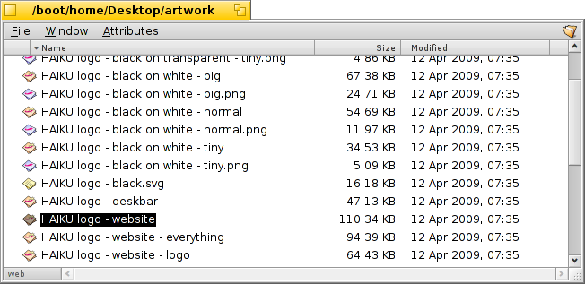

| Indeks |
|
Mounting volumes Navigating Appearance Tracker preferences Working with files Transaction status |
Tracker
Tracker jest graficznym interfejsem do wszystkich twoich plików. Pozwala tworzyć nowe pliki i katalogi, a także wyszukiwać, uruchamiać, zmieniać nazwy, kopiować oraz usuwać już istniejące.
Będąc zwyczajną aplikacją (Pulpit z ikonami jest tak naprawdę pełnoekranowym oknem w tle), Tracker pojawia się w Deskbarze razem ze swoimi oknami, i można go zakończyć lub zrestartować. Najłatwiej to zrobić za pomocą Monitora zespołów.
 Montowanie woluminów
Montowanie woluminów
Aby uzyskać dostęp do dysku twardego, płyty CD, pendrive’a, itp. najpierw trzeba je zamontować, tzn. poinformować system o ich istnieniu. Można to zrobić klikając prawym przyciskiem myszy na Pulpicie lub już zamontowanym woluminie (np. dysku rozruchowym i wybierając wolumin z podmenu . To samo menu znajduje się w Deskbarze.

Aby nie montować ręcznie wszystkich woluminów po uruchomieniu systemu, istnieje sekcja .
Powyższe ustawienia automatycznie montują urządzenia pamięci masowej oraz wszystkie dyski zamotowane przy poprzednim uruchomieniu systemu.
Nawigacja
Domyślnie, po dwukrotnym kliknięciu na katalogu Tracker otwiera nowe okno, poprzednie pozostawiając otwarte. Może to szybko doprowadzić do bałaganu na ekranie.
Można temu zapobiec wciskając klawisz OPT podczas kliknięcia. Spowoduje to zamknięcie poprzedniego okna.
Powyższe ma zastosowanie również podczas używania klawiatury do nawigacji. Więcej informacji w temacie Skróty i kombinacje klawiszowe.
Poruszanie się po katalogach to jedno z głównych zadań Trackera, tak jak w przypadku menedżerów plików na innych platformach. Tracker ma kilka unikalnych funkcjonalności, które to ułatwiają.
Zagłębianie się w podmenu
Istnieje lepsza metoda od przeklikiwania się w głąb katalog po katalogu:

Kliknięcie prawym przyciskiem myszy na katalogu, wywoła menu kontekstowe. Na górze tego menu znajduje się podmenu bieżącego katalogu pozwalające na nawigację w głąb. Wystarczy rozwijać kolejne menu aż do znalezienia szukanego pliku lub katalogu i kliknąć na nim, aby go otworzyć. Powyżej pokazana jest zawartość katalogu /boot/home/config/.
Jeżeli wykonasz powyższe przeciągając plik, ostanie on przeniesiony do miejsca, na którym został upuszczony.
Podobnie działa to w każdym oknie Trackera:

Kliknięcie obszaru w lewej dolnej części okna, gdzie wyświetlona jest liczba elementów, wyświetli menu z elementami odpowiadającymi każdemu katalogowi nadrzędnemu, aż do Pulpitu. Stąd można nawigować w głąb w sposób opisany wyżej.
Zauważ że Pulpit jest zawsze najwyższym poziomem, ponieważ to tam Tracker wyświetla zamontowane woluminy. Z tego względu, aby przejść do innego dysku, napierw trzeba przejść na samą górę (do Pulpitu) i stamtąd przeskoczyć na inny wolumin.
To samo menu wyświetli się podczas przeciągania pliku na ikonę katalogu. Po krótkiej chwili oczekiwania (bez upuszczania) pojawi się podmenu umożliwiające przejście do lokacji docelowej. Jeżeli przenoszenie zostało rozpoczęte prawym przyciskiem myszy, po upuszczeniu możliwy będzie wybór między skopiowaniem, przeniesieniem i dowiązaniem.
Zaznaczanie plików przez pisanie z wyprzedzeniem
Ten koncept może być znajomy, bo pojawia się w menedżerach plików innych systemów operacyjnych: wpisanie pierwszych kilku liter nazwy pliku zaznaczy pierwszy pasujący plik. Haiku rozwija ten pomysł. Jeżeli nie ma pliku o nazwie zaczynającej się od wpisanych liter, Tracker poszuka pliku zawierającego te litery gdziekolwiek: np. w środku nazwy, a nawet w atrybutach.
W powyższym przykładzie istnieje wiele plików o nazwie zaczynającej się od „Haiku logo”, co powoduje że prostsze rozwiązania pisania z wyprzedzeniem są bezużyteczne. W Haiku jednak, wpisanie „web” zaznaczy plik zawierający pierwsze ich wystąpienie: „Haiku logo - website”. Wpisywane znaki pojawiają się w lewym dolnym rogu, tam gdzie wyświetlana jest liczba elementów w katalogu. Sekundę po wpisaniu znaku, obszar wraca do normalnego stanu i jest gotowy na kolejne wyszukiwanie.
Filtrowanie przez pisanie z wyprzedzeniem
Instead of jumping to a file while typing, there's also the option to filter out all files not matching your type-ahead string. This can improve clarity dramatically, especially when dealing with crowded folders. By using SHIFT SPACE as delimiter, you can even filter on multiple strings.
Contrary to type-ahead jumping, the filtering will stick until you press ESC or close the window (or leave the folder if you're using Single Window Navigation).
This type-ahead filtering is set in the Tracker preferences.
Appearance

Tracker windows offer three different viewing modes from the menu:
(ALT 1) - Big icons, you can change the size from the submenu or in/decrease their size with ALT +/-.
(ALT 2) - Small icons.
(ALT 3) - A detailed list of your files enabling you to show/hide file attributes (see topic Attributes.)
The menu offers a number of other functions:
(ALT Y) - Resizes the window to its ideal size.
- Only available in Icon or Mini icon view, a submenu allows to set the sorting order to various properties:
, , , , , , ,
- Inverts the sorting order
(ALT K) - Aligns all icons to an invisible grid. Hold down SHIFT and the menu becomes which additionally sorts all icons according to the above selected criterium.
(SHIFT ALT A) - Select files according to a regular expression.
(ALT W) - Closes the window. Hold down SHIFT and the menu becomes which closes every Tracker window.
(ALT Q) - Closes every Tracker window in the current workspace. A useful shortcut if you forgot to hold the OPT key while clicking through folders and all those still open Tracker windows clutter your workspace.
Sometimes you just want to rearrange a few icons without doing a complete (ALT K). In that case, you select these icons and start to drag them to their new location. Before you drop them there, keep ALT pressed. This will align the icons to the invisible grid.
The rest of the functions are pretty self-explanatory, leaving the Tracker preferences.
Tracker preferences
opens a panel that offers a number of settings that, where not obvious, should become clear once tried out. Since all settings are applied live, you'll immediately see the changes.
So, in short, the not so obvious settings:
- Decide if all mounted disks appear directly on the Desktop or in a window after clicking a single Disk icon sitting on the Desktop.
- You can set , i.e. a double-clicked folder doesn't open in its own window, but inside the already open window instead, replacing the view of its parent folder. This is not the same as clicking while holding the OPT key, as described above, because you'll lose the per window saved position and size.

Before you switch Tracker to , because that may feel more familiar to you, we recommend giving the menu based browsing a try first, as that may actually work much faster for you after getting used to. On the other hand, single window browsing offers a Navigator where you can enter or copy & paste a path name and use back, forward and up buttons.
Activating will filter the contents of a Tracker window while you type to only display the files matching your string in their name or any currently displayed attribute. See above.
- Set the color of an optional indicator of free space that's shown besides a disk's icon.
- Define when and what disks are mounted automatically, as described above under "Mounting volumes".
This panel, by the way, is also available as Tracker from Deskbar's .
Working with files
When invoked on a selected file, most of the menu commands are also offered in the context menu by right-clicking that file.
As usual the commands are pretty clear.
- Find a file or folder. See topic Query for more info.
- Create a new folder or any other file based on a template.

Choosing opens the folder /boot/home/config/settings/Tracker/Tracker New Templates. Creating a file in that folder will offer its filetype with the file's name and other attributes as template in the menu. Here, there's a file "Text" with the filetype text/plain. See topic Filetypes for more info.
- A submenu offers all applications that can handle this filetype.

The preferred application that would open the file when double-clicked, is checkmarked. This submenu lists first those applications that can handle the exact filetype, in this case it's a text file, the type text/plain. Next come all applications that can handle that supertype in general, here text/*. Last in the list are those that can deal with any file. If you don't click on an app in the submenu, but on the entry instead, a panel opens:

Here you'll again find the programs that were listed in the submenu. By selecting one and clicking the button, you changed the preferred application for every file of that filetype, here text/plain.
-
This opens a panel that shows the meta data of a file and lets you edit its permissions. You can rename it by clicking on the file name at the top.

The panel consists of three tabs:
- : Shows standard data like size, date of creation/modification, file type and location. Click on the location path to open the files parent folder. The menu sets the preferred application to open this particular file.
- : Lets you change owner, group and file permissions.
- : Lists all extra file attributes with their value and type.
, and - lets you rename or duplicate a file or put the selected file(s) to the trash.
, and - lets you move, copy or link the selected file(s) using the submenu navigating method. Holding SHIFT while invoking the menu offers the option to create a relative link.
, and - lets you cut, copy and paste files using the clipboard. By holding SHIFT while invoking the menu you can files, maybe from another folder that you can paste somewhere else later. Also, while holding SHIFT you can paste the copied files in the clipboard as links.
- will sniff out and set the type of files if they didn't have one before, e.g. if you transferred a file with wget which doesn't set a filetype itself. Holding SHIFT while invoking the menu changes the item to which identifies the filetype and corrects it if it was false before.
- offers you every generic Tracker add-on and those that can handle the selected file(s). See topic Tracker Add-ons for more information.
Transaction status
When you copy, move or delete files, Tracker shows its progress with a status window. If you initiate more than one transaction, each job gets its own status display.

To the right are two buttons to pause or stop a transaction entirely. Sometimes it can be useful to temporarily pause a large transaction. For example, you may need to quickly launch a large application. Copying large amounts of data chokes your harddisk's IO bandwidth and thus delays your workflow.